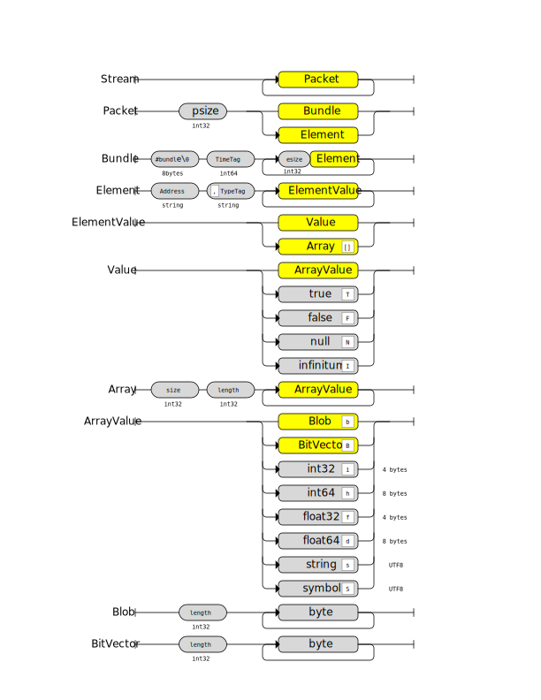

The Ventuz 4 - Remoting uses Open Sound Control Version OSC 1.0 to communicate with Ventuz in a very fast, version and platform independent way. It doesn't utilize the Ventuz OSC.net implementation because of its performance and modifications to the OSC specifications.
Since the default transfer is based on unreliable UDP packets, the new Ventuz 4 - OSC Remoting 4 uses TCP/IP to transfer the OSC messages. Therefore the slip mode introduced in OSC 1.1 is implemented to separate particular OSC messages from a byte stream; every message has a leading 32bit integer defining the size in bytes of the following message. This size is always a multiple of 4.
Supported OSC Types:
| Type Tag | Description | mapped to C#.net Type |
|---|---|---|
| i | Integer (32bit) | System.Int32 |
| h | Integer (64bit) | System.Int64 |
| t | OSC Time Tag (64bit) | System.Int64 |
| s | String UTF-8 | System.String |
| S | Symbol String UTF-8 | System.String |
| f | Float (32bit) | System.Single |
| d | Double (64bit) | System.Double |
| I | Infinitum | System.Single (PositiveInfinity) |
| b | Blob (byte array) | System.Byte[] |
| B | BitVector | System.Boolean[] |
| T | True | System.Boolean (true) |
| F | False | System.Boolean (false) |
| N | Null, no value | null |
| [ | Begin of array type definition | |
| ] | End of array type definition |
Every block in this diagram declares a data item that always starts at a relative offset within the stream aligned to a 4-byte boundary. Data block that require a less number of bytes than a multiple of 4 are padded with zeros. See OSC 1.0.

The TypeTag is a string that describes the data (arguments) stored in an Element. This string always starts with a comma character.
Example: One int32
",i"
Example: Two int32
",ii"
Example: Two int32 and a string
",iis"
Example: Two int32 and an array of strings
",ii[s]"
Bundles are used to schedule certain commands to a specific cluster clock. Only a few commands respect the time tag of the bundle. Such commands are marked with [T] in this documentation.
This scheduling is not intended to be used to schedule certain actions (like one might expect) - its more for synchronizing several commands to be executed with the same frame in the correct order. Commands that are scheduled too far in the future (more than 100 frames) may result in an error!
Scheduling remote commands is only possible with a valid Cluster License
The Remoting 4 OSC implementation doesn't use any wild-carding as specified in OSC 1.0. Special characters like '*' or '?' are treated as part of the element address. Any character except slash '/' is a valid character for element addresses. This is required to be able to use the addressing technique used in the Template Engine.
Since OSC only defines ASCII as character encoding we decided to transfer Strings (s) and Symbols (S) always in UTF8 encoding. A third party OSC implementation may encounter problems with that!
Since OSC 1.0 doesn't define how arrays have to be transferred we created our own implementation. Therefore this implementation is not compatible to any other implementation. Some restrictions apply:
An array is serialized as follows:
| int32 | Number of bytes used for all data fields of that array. 0 for empty arrays. |
| int32 | Number of array elements defined. |
| data bytes of the elements | |
Example Array of 3 integers ([i] 100,101,102):
0000000C (12 bytes) 00000003 (3 elements) 00000008 (100) 00000009 (101) 0000000A (102)
Example Array of 4 strings ([s] "A", "ABC", "", "ABCD"):
00000014 (20 bytes)
00000004 (4 elements)
41000000 ("A")
41424300 ("ABC")
00000000 ("")
41424344 00000000 ("ABCD")
Example for a mixed type array with 2 string-integer pairs ([si] {"A", 100}, {"B", 101}):
00000010 (16 bytes)
00000004 (2 elements)
41000000 ("A")
000000C8 (100)
42000000 ("B")
000000C9 (101)
As in standard OSC encoding every value has to be aligned to a 4-byte boundary. This also applies to array elements.
A BitVector is written as an OSC blob where 1 byte holds max 8 bits (from LBS to MSB). The last byte indicates how many bits in that byte are used. Therefore an empty array results in a 1-byte blob.
The length of the blob is calculated like this: size = (nBits>>3)+1
Last byte:
# of bits bits 7 1bbbbbbb 6 01bbbbbb 5 001bbbbb 4 0001bbbb 3 00001bbb 2 000001bb 1 0000001b 0 00000001 0 00000000
Examples:
empty array: 0x01 or 0x00 4 times true: 0x1F 8 times true: 0xFF,0x01 or 0xFF,0x00 9 times true: 0xFF,0x03
OSC Remoting uses TCP/IP as its transport protocol. A connection (session) has to be created and kept open until a protocol/syntax/synchronisation error occurs on either side, server or client. In that case the connection is closed and has to be re-established.
Any OSC parsing error or any other socket error will close the connection and shut down the socket. A client has to reconnect and re-issue the last request/commands that haven't yet been confirmed by a valid response. This technique ensures that both sides (server and client) are responsible for a proper session management. Neither the server nor the client tries to recover from a parsing error so the communication streams are always synchronous.
Messages are the elements transferred between client and server. There are three types of messages:
Every message consists of the command name (OSC address), a list of parameters where the first one is always the Request ID (see below) and an optional IID in its address:
IID - Instance ID
Scene or Pipe related requests and responses have a special ID in their address; the so called Instance-Identifier IID. The IID is a 4-character code that uniquely identifies a scene instance or a pipe. This string is part of the command resp. OSC-address.
A Scene-IID is a four character code of the characters A to Z (upper case only). The IID is randomly created on server side (Ventuz) and is valid until a project is open. If a scene is removed from memory (unloaded) another scene may get the same IID as the unloaded scene!
Examples:
"HZGE", "RANO", "NNEQ", "AAAV"
A Pipe-IID is a four character code of the characters 0 to 9. Using a Pipe-IID resolves automatically to the instance of the layout scene of the pipe index specified in the IID. Pipes are always indexed from 0 to n (e.g.: a system with two pipes will resolve "0000" and "0001")
Examples:
"0000" resolves to Pipe #0 (always valid) "0001" resolves to Pipe #1 (valid if pipe #1 exists) "0002" resolves to Pipe #2 (valid if pipe #2 exists) ...
RID - Request ID
The communication is generally asynchronous. That means if a client sends a Request message it cannot assume that the next received Response message is the reply to that request. The order of the responses may be mixed or asynchronous Responses may be inserted in the reception stream. Therefore every request sent to the server has a Request ID that uniquely identifies a Request. A corresponding Response carries that ID. The client is responsible to associate the correct Response to its Request.
The client should start with a Request ID of 1 and continuously increase this ID by one for each session/connection. Values higher than 2,147,483,647 (=0x7FFFFFFF) are not allowed, so a subsequent increase should wrap around to 1.
The Request ID 0 (zero) is reserved for asynchronous Responses that are transferred from the server to the client without a specific Request (events, log messages, etc). Asynchronous response messages are marked with [async]
PI - Port Index A port index is an integer number starting from 0. Ports of a scene are always indexed from 0 to n-1. If a port index is transferred as an argument is used the normal binary int32 type (i). Port commands use the port index as part of the OSC-Address. In that case the Port is always expressed in two digits. (so the protocol is limited to address 100 ports: 00 to 99)
Examples:
/HZGE/00 /HZGE/42
/Error
Receive errors as a response on requests.
The Error message is received as a possible result to any request send to the server. An error message indicates that the corresponding request couldn't been executed, but the connection to the server is kept intact.
Request:
None
Response:
Type Name Description i RequestID The ID of the request that caused this error. i ErrorCode Code of the error. s/N Message A text that contains a human readable text that explains the error or NULL s/N Details A string that contains technical details or NULL
Error Codes:
400 Unknown An unknown error occurred during command execution. 401 NotSupported An unsupported operation. 402 NoProject No project is loaded yet. Ventuz doesn't render. 403 InvalidDataPool An unknown or invalid data pool was specified. 404 InvalidIID The addressed IID doesn't exists. 405 InvalidPort The addressed port doesn't exist or is locked. 406 InvalidDataItem The addressed DataItem doesn't exist or is read only while trying to set its value. 407 InvalidArgument Value couldn't be converted to the type of the DataItem. 408 Unavailable The requested value is currently unavailable. 409 CueTemplateFailed Cueing of a template failed. 410 TransitionCancelled The currently cued or processed template transition has been cancelled. 411 TakeFailed The Take cannot be executed because another action is already running. 412 UpdateFailed Updating a data item in of port failed. 413 Cancelled A batched request was cancelled
500 InternalServerError An unknown error on server has occurred. 501 InvalidRequest A malformed request message has been received.
General commands and messages that can be issued / received even if Ventuz currently doesn't render or has no project loaded.
/Ventuz/Version
Get or set protocol version
The Ventuz message is used to either determine if the connected peer is a Ventuz server or to check which protocol version it supports. The message itself only uses standard OSC types and is therefore upward compatible with all future versions. A client should always try to downgrade a newer server implementation to the supported protocol version of the client in order to work properly. The server will either confirm the downgrade with a proper response or reject it with an error.
Request:
Type Name Description i RequestID The ID of the request. i? Version Sets the version if specified. Otherwise query the version only.
Response:
Type Name Description i RequestID The ID this response belongs to. i Version Protocol version the server will use.
Errors:
NotSupported The requested version is unsupported.
/Ventuz/Info
Get general Ventuz process information
Retrieve general information about the running Ventuz server. If the client is connected to a Ventuz Designer the Project ID may change during a session. In this case the sever will send an asynchronous /Ventuz/Info message to notify the client about a project change. A client should release all its scene references and states in such a case.
Request:
Type Name Description i RequestID The ID of the request.
Response:
Type Name Description i RequestID The ID this response belongs to. 0 if the response was sent without request. iiii Version Ventuz Version (e.g. 4.02.01.00) s MachineName Name of the machine (Machine Config) i Mode mode running Ventuz software. s EditionName Text representation of the Ventuz Edition. It may contain additional information such as Beta, Pre4, etc. i GroupID Group ID of the machine (Machine Config) i MachineID Machine ID of the machine (Machine Config) ii Rate num/den Frames per second expressed in two integer values: numerator and denominator. (e.g. 60000/1001 = 59.94fps) [i] PipeModes Array of pipe modes describing the type of all available render pipes starting from index 0. A dual-pipe machine will return two array elements. i ProcessID Windows Process ID of the server (Ventuz) process. b ProcessGUID A 16 byte blob containing a Guid that is generated for each Ventuz process instance. s SystemID A string that uniquely identifies a physical machine. (e.g. Windows Installation ID) b ProjectID A 16 byte blob the ID of the loaded Ventuz Project. An empty Guid indicates that no project is currently loaded. s/N ProjectName The name of the loaded project or null if no project is loaded
Errors:
(none)
Ventuz Modes:
1 Runtime 2 Runtime (VPR) 3 Designer
/Ventuz/LogLevel
Get or set log level
Gets or sets the level of log messages that the clients wants to receive asynchronously. The default log level for new sessions is None. After a new connection is created the client should set the desired log level before issuing any other commands.
Request:
Type Name Description i RequestID The ID of the request. i? LogLevel Sets the log level if specified. Otherwise query the current log level.
Response:
Type Name Description i RequestID The ID this response belongs to. i LogLevel Current log level.
Errors:
InvalidArgument The requested log level is invalid.
Log Levels:
0 None 10 Fatal 20 Error 30 Warning 40 Info 50 Debug
/Ventuz/Log
Receive log message, response only
A Log message is received whenever Ventuz logs an entry which matches the log level set by the LogLevel command.
Request:
None
Response:
Type Name Description i RequestID Always 0. i LogLevel Log level of this message. s/N Module Module reference to the program module that caused that log entry or NULL. s/N Message Message text of that entry or NULL.
Errors:
None, since there is no request for the async /Ventuz/Log response.
/Ventuz/Perf
Request performance data
Requests sending of performance data for a certain number of consecutive frames. After processing the request Ventuz will send an async /Ventuz/Perf/Frame message back for each frame you requested.
Request:
Type Name Description i RequestID The ID of the request. i !Frames Number of frames to get performance data for
Response:
Type Name Description i RequestID The ID this response belongs to. i !Frames Number of frames perf messages will get sent.
Errors:
InvalidArgument The requested frame count is invalid.
/Ventuz/Perf/Frame
Receive performance message, response only
A /Perf/Frame message is sent by Ventuz for a certain number of video frames after getting a /Perf request. It contains the frame's statistics output and performance timing data encoded as a JSON object.
Request:
None
Response:
Type Name Description i RequestID Always 0. s Message Performance data in JSON format
Errors:
None, since there is no request for the async /Ventuz/Perf/Frame response.
A Ventuz process (Designer or Runtime) has several options that are independent from the loaded project. But the number and type of available options may depend on the actual configuration (Ventuz Configuration, Audio and Video configuration. The Option commands allow a remote client to receive the DataModel of all available options of the connected Ventuz process as well as getting and setting the values.
/Ventuz/Options/DataModel
Gets the DataModel of all Ventuz Live Options such as Genlock delay, ShowPointer, etc
Request:
Type Name Description i RequestID The ID of the request.
Response:
Type Name Description s DataModelXML An XML string that contains the Data Model.
Errors:
None
/Ventuz/Options//<DataItem>
Gets or sets the value of a Live Option.
The <DataItem> part of the address is the full path of the data item. Live options are always rooted and have no named DataModels. Therefore the address of the DataItem always start with a '.'
The double-slash // between /Ventuz/Options and <DataItem> is mandatory!
Example Address for a Live Option:
/Ventuz/Options//.AVC.Streams.DX_0.BorderColor
Get or set option DataItems are not scheduled they are always executed synchronously.
Request:
Type Name Description i RequestID The ID of the request. any? Value All supported types are allowed.
If specified and a Property is addressed the value of that property is set. If no value is specified the property value is queried and attached to the response. A required type conversion is performed when necessary using the invariant culture when converting from or into strings.
If a trigger is addressed the optional value is interpreted as int and the value is attached to the trigger. A trigger value of zero is the default.
Response:
Type Name Description i RequestID The ID of the request. any? Value Both, get and set Property requests fill this value with the actual value. For set requests the value is queried right after the value has been set. The value may differ from the requested value!
Call Trigger requests do not fill this value.
Errors:
InvalidDataItem The addressed DataItem doesn't exist or is read-only while trying to set its value. InvalidArgument The type couldn't be converted into the target type, the value is invalid for that DataItem, or setting the property failed in general.
Project related commands are only valid if a project is loaded and the Ventuz Renderer is running. Issuing a project command if no project is loaded will cause a NoProject error message to be returned.
/Ventuz/Files
Get all files of a data pool
Retrieve all files of a specified data pool. A data pool usually refers to a sub folder with the Ventuz project folder - but it could be delegated to another location on the local disk, a network folder or a database. Files returned on this request contain the full relative path and the original file extension. The data pool Scenes doesn't return the file extension so the returned scene files matches directly the scene identity.
Request:
Type Name Description i RequestID The ID of the request. s DataPool The Data Pool to be queried as case insensitive string.
Response:
Type Name Description i RequestID The ID this response belongs to. [s] Files An array that contains all files found in that data pool or an empty array.
Data Pools
Misc Miscellaneous files. Project Project related files. Scenes Scene files. Images Image files. Textures Texture files. (dds) Audio Audio files. Movies Movie files. Data Data files. Geometries Geometry files. (vzm) Shaders Shader related files. Scripts Script related files. Fonts Font files. Sounds Sound files. Documentation Documentation files. Assets Asset files.
Errors:
NoProject If a clock is requested but Ventuz doesn't render, because no project is loaded yet. InvalidDataPool If an unknown data pool is queried.
/Ventuz/SceneModel
Get complete information about all data models and templates of a scene stored on disk
Gets the entire XML SceneModel description on request. The SceneModel is read directly from disk. The actual scene is not loaded into memory.
Request:
Type Name Description i RequestID The ID of the request. s SceneIdentity The Scene Identity (filename without extension) of the scene to be loaded.
Response:
Type Name Description i RequestID The ID this response belongs to. s SceneModelXML An XML string that contains the Scene Model.
Errors:
NoProject No project is loaded. Unavailable The Scene file has been found but it doesn't contain a SceneModel (saved with a Ventuz version below Ventuz 4)
/Ventuz/Clock
Get the current renderer clock
Get the current rendering time. The returned value is the number of frames in its fps time base returned by /Ventuz/Info. The returned time has no relation to the time of the day in reality! Please note that the returned value could lie in the past at the time of reception! The FPS parameters defines the duration of a frame like this:
fps.divisor / fps.dividend = frame.duration
Examples:
1001 / 60000 = 0.0166833333 1000 / 60000 = 0.0166666666 1000 / 50000 = 0.0200000000
Request:
Type Name Description i RequestID The ID of the request.
Response:
Type Name Description i RequestID The ID this response belongs to. h Clock The current value of the cluster clock.
Errors:
NoProject If a clock is requested but Ventuz doesn't render, because no project is loaded yet.
/Ventuz/DataModel
Gets the DataModel of the Project Data.
Request:
Type Name Description i RequestID The ID of the request.
Response:
Type Name Description i RequestID The ID this response belongs to. s DataModelXML An XML string that contains the Project Data Model.
Errors:
NoProject No project is loaded.
/Ventuz//<DataItem>
Gets or sets the value of a Project Data Property, calls a Project Trigger.
The <DataItem> part of the address is the full path of the data item within the scene. It follows the addressing rules described in Template Engine. Project Data doesn't support nested data sets (sub-templates). Therefore a project data address always starts with a leading dot ('.')
The double-slash // between /Ventuz and <DataItem> is mandatory!
Example Address for a simple DataItem on scene level:
/Ventuz//.Scores.Home
The time value of the OSC Bundle is only honored on set-requests. If a DataItem is just read the time value is ignored
Request:
Type Name Description i RequestID The ID of the request. any? Value All supported types are allowed.
If specified and a Property is addressed the value of that property is set. If no value is specified the property value is queried and attached to the response. A required type conversion is performed when necessary using the invariant culture when converting from or into strings.
If a trigger is addressed the optional value is interpreted as int and the value is attached to the trigger. A trigger value of zero is the default.
Response:
Type Name Description i RequestID The ID of the request. any? Value Set Property requests do not fill this value.
Get Property requests fill this value with the requested value.
Call Trigger requests do not fill this value.
Async Trigger callbacks fill this value with the attached argument of that trigger.
Errors:
NoProject No project is loaded. InvalidIID The addressed IID doesn't exist or the scene to be assigned is invalid. InvalidDataItem The addressed DataItem doesn't exist or is read-only while trying to set its value. InvalidArgument The type couldn't be converted into the target type or the value is invalid for that DataItem.
/Ventuz/Batch
Starts or commits/cancels a batch of set DataItem requests.
Batches combines multiple set DataItem requests into one single atomic operation that is either committed or canceled. The first request (no argument) is used to create a BatchID for the current connection (session). The returned BatchID is a negative number used as timestamp for bundled requests that sets any DataItems. Finally the batch is comitted or canceled with a second Batch request along with the BatchID and the Commit parameters. All set commands cached on server side are executed at the time of the second Batch request at the specified timestamp in the OscBundle.
All responses to each set DataItem request are received after the batch has been committed. If the batch has been cancelled all requests will receive an error Cancelled
All batched requests are interpreted on execution. Therefore requests that address DataItem using the port-addressing will apply the the scene that is assigned to the addressed port on execution!
Request:
Type Name Description i RequestID The ID of the request. h? BatchID If specified the batch to commit or cancel (see next parameter) T/F? Commit Only valid if the previous parameter BatchID is specified. True = commit, False = cancel
Response:
Type Name Description i RequestID The ID of the request. h BatchID The return BatchID is used as timestamp (OscBundle) for set DataItem request.
Errors:
InternalServerError Batch failed
Pipe commands are Project Commands that address render pipes only. Issuing a pipe command if no project is loaded will cause a NoProject error message to be returned.
/<PipeIID>/Info
Get information about a render pipe
Retrieve the shared memory information of a render pipe. Only render pipes that have the MemoryGPU flag are valid addresses for this request. All other pipes will return a NotSupported error. A SharedMemoryInfo message is returned as an asynchronous response if the share information has changed during runtime (device lost/reset, window resized, project closed, etc)
Request:
Type Name Description i RequestID The ID of the request.
Response
Type Name Description i RequestID The ID this response belongs to. 0 if the response was sent without request. i Mode Mode for the Pipe. h GpuShareHandle Contains adapter and share handle of the pipe. ii Width, Height Size in pixels. ii Rate num/den Refresh rate in numerator/denominator notation. i PixelFormat Pixel format of the data i/N Layout IID IID of the Layout scene in this Pipe, null (N) if no project is loaded.
Errors:
NoProject No project is loaded. NotSupported The addressed pipe doesn't support shared memory InvalidIID The addressed pipe doesn't exist or is invalid.
Pipe Flags
1 Graphics Output via graphics board 2 Video Output via video hardware or network 3 OffScreen No output - just shared surface
Pixel Formats
0 A8R8G8B8 ARGB 8 bit per component, 32 bit per pixel 1 A16B16G16R16 ABGR 16 bit per component, 64 bit per pixel 2 A16B16G16R16F ABGR 16 bit float per component, 64 bit per pixel 3 A32B32G32R32F ABGR 32 bit float per component, 128 bit per pixel
GPU Share Handle
This 64bit number contains the adapter ordinal used to render the pipe in the upper 32 bits. The lower 32bit contains the shared texture handle of the pipe if supported (0 otherwise).
To create the shared counterpart of this texture create a Direct3D 9ex device on the specified adapter ordinal (upper 32 bits of the GpuShareHandle). Then create a texture with the following arguments.
If an Info with a different size, a different or zero share handle is received the texture has to be released.
Shared Surfaces a not synchronized with the Ventuz Renderer are only intended for previews. The remotimng client should not lock the shared surface longer as required and should not perform any read-backs to CPU memory. Those action will interfere the rendering may cause frame drops!
/<PipeIID>/Snapshot
Get a screen-shot of a render pipe
Gets a snapshot of the addressed pipe and transferred as an image. Please note that this command is not real-time capable and the rendering may stutter while grabbing an image!
Request:
Type Name Description i RequestID The ID of the request. i ImageFormat The Image Format to be transferred. ii Size The image will be scaled down or up to the specified size (width and height in pixels). A size of 0,0 will maintain the original size. iiii Rectangle Sub area of the image or 0,0,0,0 for the entire image i Filter Filter to be used when scaling down the image. T/F Alpha If true the image will contain the alpha channel if the specified image format supports it)
Response:
Type Name Description i RequestID The ID this response belongs to. b Image A blob containing the image.
Errors:
NoProject No project is loaded. NotSupported The addressed pipe doesn't support snapshots InvalidIID The addressed pipe doesn't exist or is invalid. InvalidArgument The called provided invalid argument. See error details.
Image Formats
0 BMP Windows Bitmap, uncompressed 1 PNG Portable Network Graphics, loss-less compressed 2 TIF Tagged Image File, loss-less compressed 3 JPG Jpeg, lossy compressed (no alpha support)
Image Filters
0 None No Filter 1 Low Medium but fast (AreaAverage) 2 High Best quality but slow (Lanczos)
Scene commands are Pipe Commands that can address scene instances or pipes. Issuing a scene command if no project is loaded will cause a NoProject error message to be returned.
/<IID>/Load
Load a scene into memory
Loads a scene into memory. Issuing a Load request always returns a valid IID. Subsequent Status messages informs the client about the progress and success of the load. The addressed IID specifies the scene that actually performs load. If a pipe is specified the currently layout scene of that pipe performs the load. If a scene is specified that scene performs the load.
Request:
Type Name Description i RequestID The ID of the request. s SceneIdentity The Scene Identity (filename without extension) of the scene to be loaded. i LoadFlags Indicates how a scene is loaded.
Response:
Type Name Description i RequestID The ID this response belongs to. i IID IID of the loaded scene. T/F IsNew True if the scene has been loaded as a new instance. False if the scene has been re-used from memory.
Note that you will receive two responses for a Load request: 1. when scene loading starts 2. when scene loading completes!
Errors:
NoProject No project is loaded. InvalidIID The addressed IID doesn't exist or is invalid. InvalidArgument The specified Load Flags are invalid
Load Flags
The following flags can be or'ed together. At least one flag must be set.
0x01 New A new instance is loaded if re-usage of an existing instance was either not allowed or no matching scene has been found. 0x02 Existing An existing instance is allowed to be re-used. If no scene is found and the New flag is set a new instance is loaded. 0x04 Unused An existing instance is selected only if it is not assigned to a port. This flag is only valid in combination with Existing
/<IID>/Status
Get status of a scene
Gets the status of a scene instance specified by the IID in the address. Such messages are also sent asynchronously without specific request - hence a client receives status changes of all scenes in memory!
Request:
Type Name Description i RequestID The ID of the request.
Response:
Type Name Description i RequestID The ID this response belongs to. 0 if the response was sent without request. i Status Detailed information about the loaded and validation state of the scene. See below. s SceneIdentity The Scene Identity of the scene. i? IID IID of the scene that owns the port where this scene currently assigned to. If this field exists the next field is also existent. i? PID Port index of the port where this scene currently assigned to.
Errors:
NoProject No project is loaded. InvalidIID The addressed IID doesn't exist or is invalid.
Status
0x000000?? Loading progress (0-255) 0x00000100 Loaded. 0x000001?? Validating progress (0-255) 0x00000300 Validated and ready to use. 0x80010000 Scene has been unloaded from memory and cannot longer be addressed. 0x80020000 Load Error. Scene handle is invalid and should be released.
/<IID>/Scenes
Get loaded (in-memory) scenes
Retrieve all scenes currently loaded in memory. It optionally requests only scenes that has been loaded by the addressed IID or all scenes (global).
Request:
Type Name Description i RequestID The ID of the request. T/F Global If set to true all scenes in memory are returned. If false only scene loaded by the addressed IID are returned.
Response:
Type Name Description i RequestID The ID this response belongs to. [i] IID-List Array of IIDs.
Errors:
NoProject No project is loaded. InvalidIID The addressed IID doesn't exist or is invalid.
/<IID>/Validate
Validates a scene
Validate the addressed IID. Status messages are received during the validation process.
Request:
Type Name Description i RequestID The ID of the request.
Response:
Type Name Description i RequestID The ID this response belongs to.
Errors:
NoProject No project is loaded. InvalidIID The addressed IID doesn't exist or is invalid.
/<IID>/Release
Releases a loaded scene
Releases the addressed IID. Only scenes loaded by the remoting can be released. Releasing a scene doesn't necessarily unload it from memory, because it still could be used by a scene port or it is opened in the Ventuz Designer. One could try to remove the scene from its port before issuing a Release command in order to unload it. Status message will be sent if the scene gets unloaded due to a Release.
Request:
Type Name Description i RequestID The ID of the request.
Response:
Type Name Description i RequestID The ID this response belongs to.
Errors:
NoProject No project is loaded. InvalidIID The addressed IID doesn't exist.
/<IID>/Ports
Get information about the ports of a scene
Enumerate the ports of the addressed scene. A synchronous response is sent if the ports of a scene have been changed. This usually only happens if the scene is currently opened in Ventuz Designer and the ports are modified on the fly. Scenes in the Ventuz Runtime never change their port list.
Request:
Type Name Description i RequestID The ID of the request.
Response:
Type Name Description i RequestID The ID this response belongs to. 0 if the response was sent without request. [si] Port Info A array of name and Port Flags
Errors:
NoProject No project is loaded. InvalidIID The addressed IID doesn't exist or is invalid.
Port Flags
0x0001 Locked Port is locked and its scene assignment cannot be changed via remoting. 0x0002 ManualTemplate The port is a manual template port (Template Layer or Template Port) and should be controlled by its Data property 0x0004 Layer The port is a Scene Layer or a Template Layer.
/<IID>/SceneModel
Get complete information about all data models and templates of a scene in memory
Gets the entire XML SceneModel description on request. The response is also transferred if the scene model has been modified by the user. This can only happen if connected to Ventuz Designer and the operator is modifying the template structure or meta data.
Request:
Type Name Description i RequestID The ID of the request.
Response:
Type Name Description i RequestID The ID this response belongs to. 0 if the response was sent without request. s? SceneModelXML An XML string that contains the XAML representation of the Scene Model. This argument only exists in responses to explicit requests!
Please note that the async response does not provide the SceneModelXML argument. The actual scene model is only transferred on an explicit request since the data volume can exceed multiple kilo- or megabytes'''
Errors:
NoProject No project is loaded. InvalidIID The addressed IID doesn't exist or is invalid. Unavailable The addressed IID doesn't have a scene model.
/<IID>//<DataItem>
Get or sets the value of a Property, calls a Trigger or receives async triggers.
The <DataItem> part of the address is the full path of the data item within the scene. It follows the addressing rules described in Template Engine. Please note async response always uses the DataModel-qualified addressing!
The double-slash // between <IID> and <DataItem> is mandatory!
Example Address for a simple DataItem on scene level:
/XGTQ//.PositionX
The time value is only honored on Set-requests. If a DataItem is just read the time value is ignored
Request:
Type Name Description i RequestID The ID of the request. any? Value All supported types are allowed.
If specified and a Property is addressed the value of that property is set. If no value is specified the property value is queried and attached to the response. A required type conversion is performed when necessary using the invariant culture when converting from or into strings.
If a trigger is addressed the optional value is interpreted as int and the value is attached to the trigger. A trigger value of zero is the default.
Response:
Type Name Description i RequestID The ID of the request. any? Value Set Property requests do not fill this value.
Get Property requests fill this value with the requested value.
Call Trigger requests do not fill this value.
Async Trigger callbacks fill this value with the attached argument of that trigger.
Errors:
NoProject No project is loaded. InvalidIID The addressed IID doesn't exist or the scene to be assigned is invalid. InvalidDataItem The addressed DataItem doesn't exist or is read-only while trying to set its value. InvalidArgument The type couldn't be converted into the target type or the value is invalid for that DataItem.
DataItem Type Mapping
DataItem C-Sharp OSC Notes Float float f Double double d Integer int i Boolean bool T/F TRUE or FALSE String string s/N string or NULL Enum string s Color Color i 32-bit ABGR (0xaabbggrr) Visual Uri s Asset Uri s FloatArray float[] [f] DoubleArray double[] [d] IntegerArray int[] [i] BooleanArray bool[] B encoded bit array ByteArray byte[] b Blob StringArray string[] [s] null-strings within array has a special encoding. see Arrays
If a DataItem represents an Animation Control property it accepts write commands to control the animation logic of this animation.
Only control properties of animation can be controlled. Animation Groups are not controllable this way! The Control property of the Animation node must be connected to the Scene Data, but must not be checked as part of the Scene Template!
The remote caller can send animation control commands as a string. The server will send a response to the set command with the current status. To query the current status without issuing a new command a null-string (N) has to be send.
Reading the current animation status as well async animation status changes notification is not implemented yet!
To clear/remove the current command an empty string ("") has to be sent.
There are five possible commands. These commands can be combined into a concatenated string while any white spaces are ignored:
STATE
"S<StateID>"
Jumps to an Animtion State by its ID>0. Commands issued with zero or any negative value for StateID are ignored.
CONNECTION
Plays an Animation Connection by its ID.
A negative value for the ConnectionID plays the connection backwards.
"C<ConnectionID>"
If the speed/position is specified a positive value it is interpreted as a speed factor of the original speed (1.0 = 100%) and the animations is played (default).
If the value is between 0.0 (0%) and -1.0 (100%) the time is set to the relative position with the connection and the animation is not played. (scrub-mode)
"C<ConnectionID>:<speed/position>"
If the third argument speed is specified it is used as speed and the second argument is always interpreted as position. The connection will be played the specified position and speed.
"C<ConnectionID>:<position>:<speed>"
WAIT
"W[<timeout>]"
Waits for a certain amount of seconds before continue. A value of 0.0 waits forever. Any wait can be released by sending a Proceed command. If no timeout value is specified a value of 0.0 is used.
ROUTE
"R<StateID>[:<timeout>]"
The route command will automatically generate Connection and Wait commands to find the best route to a certain state. A route command could also result in State commands if no proper route could be found. Every generated Connection or State command will have its corresponding Wait to await the expected state to be reached.
If timeout is specified an additional Wait command between every section of a route is inserted.
State, Connection, Wait and Route command can be combined to a batch that can be controlled by the Proceed commands. If a new batch is assigned the previous one will be deleted. An empty batch ("") is used to remove/clear the current one.
Example:
"S6 C3 W7 W C-4:2.0 W8 W R6 W6"
PROCEED
"P"
A Proceed command interrupts any pending time-based wait. Multiple issued Proceed commands are cached and will release every next time-based wait immediately. If a batch is cleared/removed or a batch reaches its end any cached Proceed commands is dropped.
Port commands are Scene Commands that address a scene instances (IID) and a port of that scene by its index (PI). Issuing a port command if no project is loaded will cause an NoProject error message to be returned. If the IID is invalid an InvalidIID error is returned. If the Port doesn't exist or the port is tried to be assigned but the port is locked an InvalidPort error is returned.
/<IID>/<PI>/Status
Get/Set scene and/or active state of a port
Gets the current port status or sets the port's scene assignment and/or activate/deactivates a port. The Port is addressed as a part of the OSC-Address. See Port Index
The time value is only honored on Set-requests. If a DataItem is just read the time value is ignored
Request:
Type Name Description i RequestID The ID of the request. i/N? IID If specified sets (i) or clears (N) the port T/F? Active If specified activates/deactivates the port
Response:
Type Name Description i RequestID The ID this response belongs to. 0 if the response was sent without request. i/N IID The scene currently assigned to this port or null if no scene is assigned. T/F Active Port is active (true) or inactive (false)
Errors:
NoProject No project is loaded. InvalidIID The addressed IID doesn't exist or the scene to be assigned is invalid. InvalidPort The addressed port doesn't exist or is locked.
/<IID>/<PI>/Cue
Cues a Template-Transtion based on the current state
The Cue command prepares a template for being activated or deactivated based on the current status. The transition is immediately initialized and ready to be taken by the Take command.
Request:
Type Name Description i RequestID The ID of the request. i Options Cue option flags s/N Data The Template-Data to be cued/uncued. If data is null or empty all active templates on the addressed port are uncued. b ID A 16-byte blob that contains a Guid to identify the Cue for further Take commands.
Response:
Type Name Description i RequestID The ID this response belongs to. 0 if the response was sent without request. [sf] [TakeInfo] An array of string/float pairs that contain the name and the duration is seconds of the takes. The length of the array describes the number of required Take commands to complete the entire transition.
Errors:
NoProject No project is loaded. InvalidIID The addressed IID doesn't exist or the scene to be assigned is invalid. InvalidPort The addressed port doesn't exist or is locked. CueTemplateFailed The calculation of the transition failed. See error details. Failed The initialization of the transition failed. See error details. TransitionCancelled During the initialization phase another Cue command has been received that overwrote the current one.
Options
0x0000 None Default behavior 0x0001 JumpOut Any out-animations of on-air template are skipped 0x0002 JumpIn Any in-animations of the requested template are skipped (preview) 0x0004 Deactivate The addressed template or host is cued for deactivation. If data is null a deactivation is forced. 0x0008 SingleTake The template engine will no longer wait for a take at each intermediate template state but automatically continue with the next transition until the final template state is reached. 0x0010 Release The template engine will release previous scene(s) if the transition requires to load and set another scene to the port. 0x0020 WithDeactivation If set the template will be cued for activation and deactivation. This flag is ignored if the cue describes a deactivation only. 0x0040 IgnoreCurrentState If set the template engine will ignore the current state of the current scene so any running transition or any presented templete will be dropped.
TemplateData
The Data parameters are transferred as a string that can contain several versions of addressing a template or a template host:
See TemplateEngine for details.
/<IID>/<PI>/Take
A previously cued template/transition will be animated to the next stop/wait of the transition. This command accepts the transition-Guid used to cue a transition. The number of required Take commands to complete the transition depends on the length of TakeInfo array returned by Cue. A Transition can only the executed in forward order - no take can be skipped and the cue transition can not be changed. If a transition has to be cancelled a newly issued Cue command will cancel it and calculates a new transition based on the current state.
Request:
Type Name Description i RequestID The ID of the request. b ID A 16-byte blob that contains the Guid to identify the cued transition.
Response:
Type Name Description i RequestID The ID this response belongs to. 0 if the response was sent without request.
Errors:
NoProject No project is loaded. InvalidIID The addressed IID doesn't exist or the scene to be assigned is invalid. InvalidPort The addressed port doesn't exist or is locked. TakeFailed The take failed. See error details. Failed Any other error during the internal processing occurred. See error details. TransitionCancelled The transition tried to be taken has been cancelled.
/<IID>/<PI>//<DataItem>
Get or sets the value of a Property of a Scene that is currently assigned to a Port
The <DataItem> part of the address is the full path of the data item within the scene. It follows the addressing rules described in Template Engine. Please note async responses uses always the DataModel-qualified addressing!
The DataItem message via port is used for MultiPorts (see Remoting 4 documentation) to address values that are currently loaded into a Port of a Cluster.
The double-slash // between <IID> and <DataItem> is mandatory!
Example Address for a simple DataItem on scene level:
/0000/00//.PositionX/0000/00//Host/Host/Template.Folder.PositionX
The time value of the OSC Bundle is only honored on Set-requests. If a DataItem is just read the time value is ignored
Request:
Type Name Description i RequestID The ID of the request. any? Value All supported types are allowed.
If specified and a Property is addressed the value of that property is set. If no value is specified the property value is queried and attached to the response. A required type conversion is performed when necessary using the invariant culture when converting from or into strings.
If a trigger is addressed the optional value is interpreted as int and the value is attached to the trigger. A trigger value of zero is the default.
Response:
Type Name Description i RequestID The ID of the request. any? Value Set Property requests do not fill this value.
Get Property requests fill this value with the requested value.
Call Trigger requests do not fill this value.
Async Trigger callbacks fill this value with the attached argument of that trigger.
Errors:
NoProject No project is loaded. InvalidIID The addressed IID doesn't exist or the scene to be assigned is invalid. InvalidDataItem The addressed DataItem doesn't exist or is read-only while trying to set its value. InvalidArgument The type couldn't be converted into the target type or the value is invalid for that DataItem. UpdateFailed Updating a DataItem in of port failed.